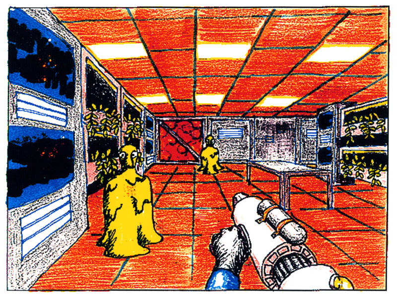
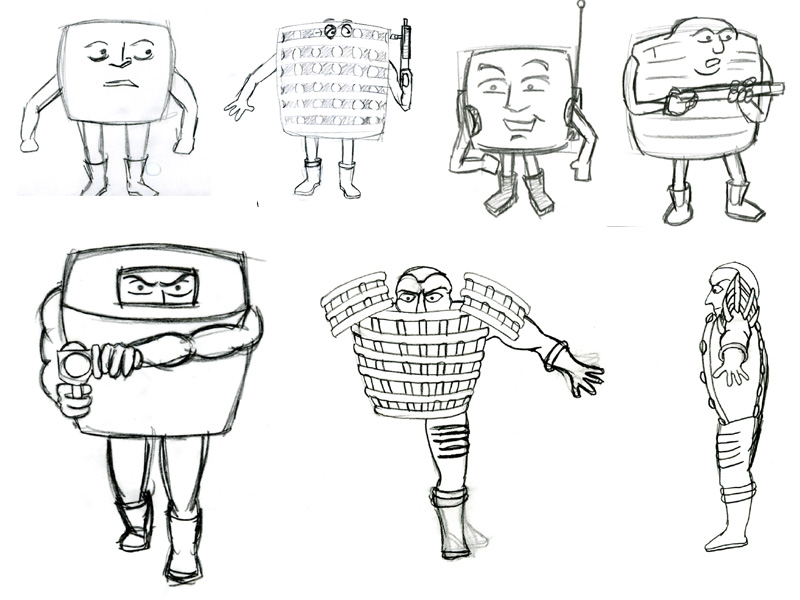
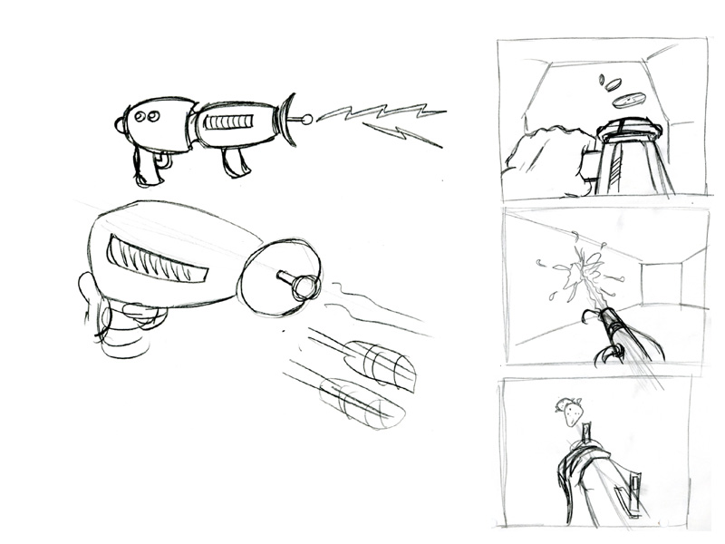
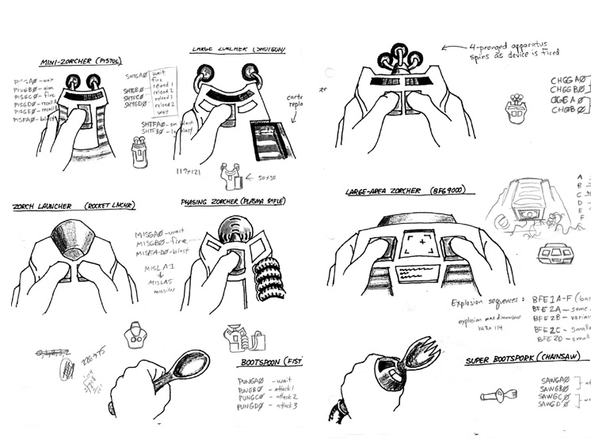
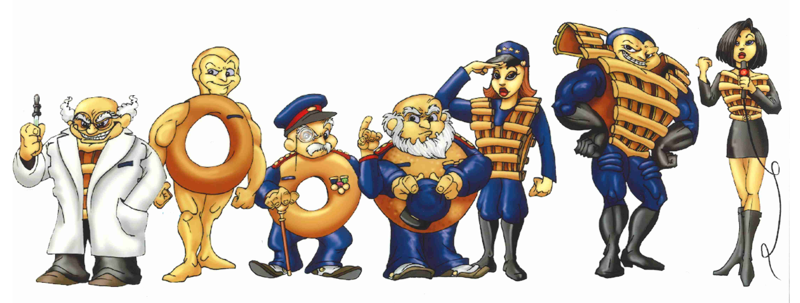
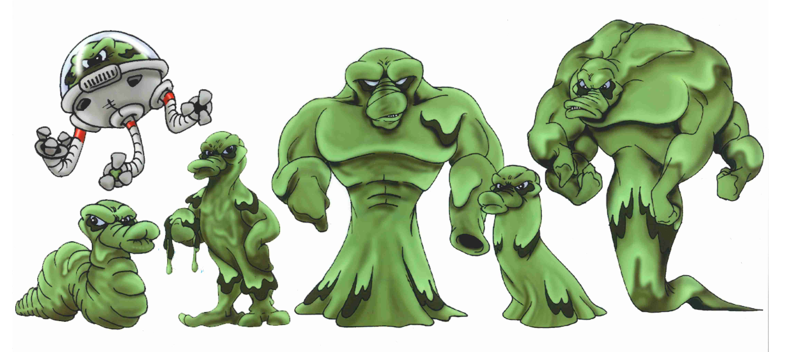
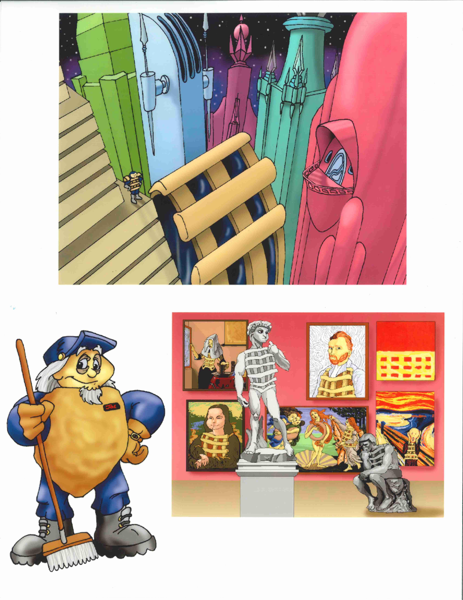

Chex Quest 1 & 2 Concepts
This is an archive of concept art for the original Chex Quest game. They were original provided by the lead artist, Charles Jacobi, in the Chex Quest Fan Forums in this post. Sometime between Saturday, November 2, 2024 and Wednesday, January 15, 2025, the original page (located at http://www.chucktropolis.com/chex/) was removed in a site update for Charles Jacobi's personal portfolio.
These are the original concept drawings by Charles Jacobi for Chex Quest 1. As is often the case in early drafts for projects, there are a lot of concepts that for one reason or another were rejected. The original commentary of Charles Jacobi is provided.

Charles Jacobi: “This image was one of the first illustrations done before we ever started doing anything in Doom, used to demonstrate how we intended a Doom conversion to look like. Note that the first concepts of the flemoids were not green, but more of a yellower snot color. We later changed to bright green both for aesthetic reasons and also due to the Doom palette limitations.”
(NOTE: A lithograph of this drawing was made available to purchase by Limited Run Games through the “Chex Quest Chex Warrior Edition” .)

Charles Jacobi: “Here are some concepts of the Chex Warrior. There were actually many other illustrations, but these are all I have with me. Notice some of the early ideas had his head as the entire Chex piece but this drew too many comparisons to the M&M characters.”

Charles Jacobi: “Here are some early zorcher concepts. We really wanted to go with ray-gun looking zorchers, but these were seen as looking too much like violent guns. Ralston wanted us to make zorchers that appeared more like remote controls or Star Trek tricorders. On the right side are some of the first weapon sketches I knocked out, back when we weren't going to zorch the flemoids, but instead "neutralize" them with nutritional food. We have a banana slice shooter, a milk gun and a strawberry rocket launcher. But Ralston didn't want to promote food fighting.”

Charles Jacobi: “Here are some of the final zorcher sketches before we started making sprites. Most did not change, but you can see that the Zorch Launcher (Propulsor) and Phasing Zorcher originally were going to look more like the other zorchers. I'm glad we took one more iteration on them, as I don't like the look of these ones.”
The following section is drawings by Josh Storms for both Chex Quest 1 and 2. Most of these were scanned and used either in-game or on chexquest.com, though the cinematic overview of Chex City was never used in any official material due to the colors not matching well with the original DOOM palette (it was eventually reworked to be used with Chex™ Quest 3 v2 as the Chex Quest 2 outro picture).
These were originally added to http://www.chucktropolis.com/chex/ on Friday, November 1, 2019, but were removed shortly thereafter between then and Wednesday, January 8, 2020 as an unintended consequence of a site update. Therefore, Charles' original commentary is unavailable. Nevertheless, please enjoy.




